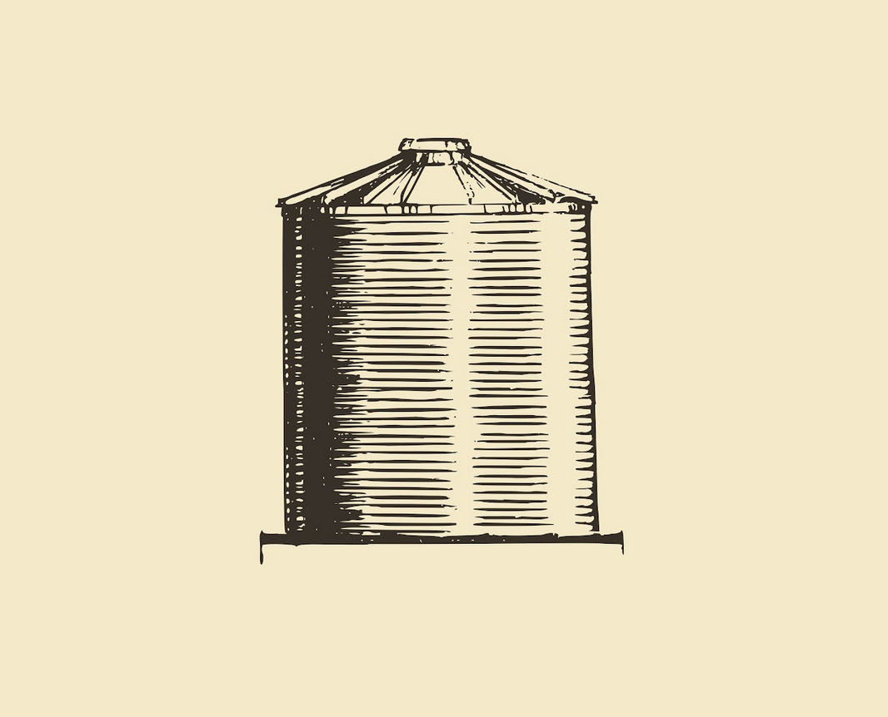

INICIO
PROYECTO CIUDAD CARIBE
REDES URBANAS
Integrantes
Andrea Torres
PRIMER CORTE
Proceso creativo
SEGUNDO CORTE
Propuesta para proyecto
TERCER CORTE
Experiencia del usuario Señalización Mapas informativos en puntos estratégicos, señalización para guia
Recorrido
Avance entrega final